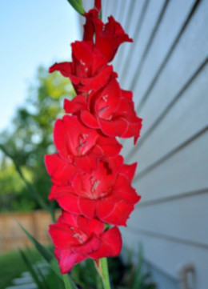

|  |
Los gladiolos son plantas pertenecientes a la familia de las Iridáceas. Estas plantas tienen su origen en tierras de Mediterráneo, en Europa central y occidental, en Asía central y también en parte del continente africano. Los gladiolos poseen un tallo conocido como torno que se presenta de forma subterránea. Así mismo cuenta con hojas que se presentan rígidas y de rasgo ensiforme. En cuanto a los tallos, éstos son bastante altos y cuentan con una buena cubierta de hojas. Las flores del gladiolo se presentan agrupadas en forma de espiga y presentan colores variados. |
|
La floración de esta planta se da en las épocas de verano y también del otoño y son plantas que en los climas cálidos o templados tiene una floración continúa. En cuanto a los usos de esta planta está el ámbito de la decoración y también para complementar bellos jardines. El cuidado de estas plantas no es complicado pero sí requiere buena cantidad de luz solar. En cuanto a las temperaturas adecuadas para su cultivo se encuentran los climas cálidos que cuentan con temperaturas de hasta 25 grados. El suelo debe tener buen humus y también estar correctamente hidratado. Debe además tener riego continuo y buen drenado de la tierra. Dentro de las plagas que atacan a esta planta está la trips y los pulgones. |
|